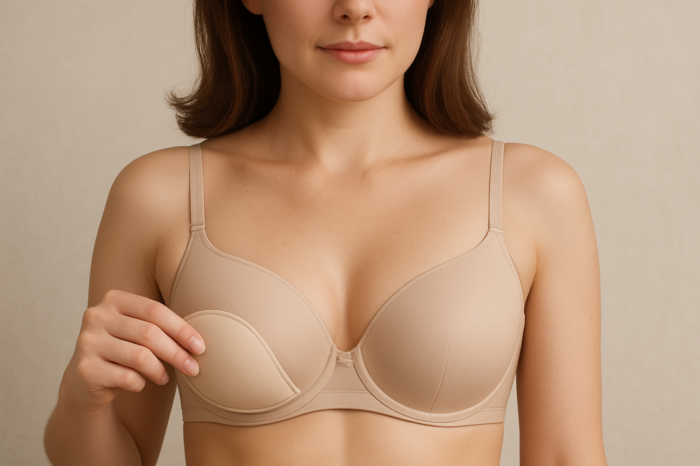

Best Bras For Asymmetrical Breasts
Best Bras for Asymmetrical Breasts: Achieve a Balanced Look
It’s a common misconception that breasts are perfectly symmetrical. In reality, most women have some degree of asymmetry, meaning one breast is slightly larger or shaped differently than the other. While this is a completely natural variation, it can sometimes make finding a well-fitting bra a challenge. A bra that fits one breast perfectly might gape on the smaller side or feel too tight on the larger side, leading to discomfort, an uneven silhouette, and a lack of confidence. The good news is that there are specific bra styles and features designed to accommodate and flatter asymmetrical breasts, helping you achieve a balanced and comfortable look. If you have asymmetrical breasts and are looking for the perfect bra, this comprehensive guide is for you. We’ll explore what to look for and recommend top picks that will help you feel confident and supported.
Understanding Breast Asymmetry and Bra Fit
Breast asymmetry is incredibly common, with studies suggesting that over half of all women have one breast noticeably larger than the other. The difference can be subtle or more pronounced. When fitting a bra for asymmetrical breasts, the primary goals are to:
- Accommodate the Larger Breast: Ensure the cup fully encapsulates the larger breast without spillage.
- Fill the Smaller Breast: Prevent gaping or wrinkling on the smaller side.
- Create a Balanced Silhouette: Achieve a visually even and smooth appearance under clothing.
- Provide Comfort: Ensure the bra feels comfortable on both breasts without digging or pressure points.
Key Features to Look For in a Bra for Asymmetrical Breasts
- Bras with Removable Padding: This is often the most effective solution. Bras with pockets for removable padding (or bras that come with removable pads) allow you to add a pad to the cup of the smaller breast, evening out the size difference.
- Molded or Contour Cups: These bras have pre-formed cups that hold their shape, which can help to mask slight asymmetry and provide a smooth, rounded silhouette. They offer a consistent shape, making minor differences less noticeable.
- Stretch Lace or Stretch Fabric Cups: Bras made with stretch lace or other stretchy fabrics can be more forgiving and adapt to slight size differences between breasts, providing a custom-like fit for both sides.
- Full Coverage Styles: Full coverage bras can often provide a more uniform look and ensure that both breasts are fully contained and supported.
- Adjustable Straps: While essential for any bra, adjustable straps are particularly important for asymmetrical breasts to ensure proper lift and positioning for both sides.
- Soft, Flexible Underwire (or Wire-Free): Ensure the underwire (if present) lies flat against your sternum and fully encircles the breast tissue of both breasts without digging in. Wire-free options can also be very comfortable and forgiving.
Top 5 Recommended Bras for Asymmetrical Breasts
1. Wacoal Basic Beauty Full Figure Underwire Bra
This bra is a fantastic option for asymmetrical breasts due to its seamless, full-coverage cups that provide a smooth, rounded shape. While it doesn’t have removable padding, its forgiving fabric and excellent encapsulation can often accommodate slight differences. It offers great support and a natural silhouette.
Features: Seamless full-coverage cups; supportive underwire; comfortable straps. Pros: Smooth silhouette; good encapsulation; comfortable for everyday; durable. Cons: Can be pricey; no removable padding. Price: As of August 2025, price: $65.00 Buy on Amazon
2. Aerie Real Me Full Coverage Bra
This Aerie bra is known for its incredibly soft, stretchy fabric that adapts beautifully to your body, making it an excellent choice for slight asymmetry. It’s lightly lined and offers full coverage, providing a natural shape and seamless look. It comes in both underwire and wire-free options.
Features: Lightly lined; full coverage; soft, stretchy fabric; available in wire-free or underwire. Pros: Very comfortable; adapts to body; seamless under clothes; natural shape. Cons: Less structured support for very large differences. Price: As of August 2025, price: $35.00 Buy on Amazon
3. Natori Feathers Underwire Contour Bra
While a plunge style, the Natori Feathers bra’s lightly padded, contour cups are very forgiving and can often mask minor asymmetry. The seamless design provides a smooth look, and the comfortable fit makes it a popular choice for everyday wear. It offers a natural, rounded shape.
Features: Lightly padded contour cups; plunge neckline; underwire. Pros: Natural shape; seamless under clothes; comfortable; versatile neckline. Cons: Can be pricey; no removable padding. Price: As of August 2025, price: $68.00 Buy on Amazon
4. True & Co. True Body V-Neck Bralette
For those with smaller busts and asymmetry, the True Body bralette is a fantastic wire-free option. Its incredibly soft, stretchy fabric adapts to your body, and the lack of rigid structure makes it very forgiving for size differences. It offers gentle support and a barely-there feel.
Features: Wire-free; soft, buttery fabric; V-neckline; seamless. Pros: Extremely soft; comfortable; adapts to body; great for lounging and sleep. Cons: Offers minimal support; not ideal for structured outfits or significant lift. Price: As of August 2025, price: $48.00 Buy on Amazon
5. Bali Comfort Revolution Wirefree Bra
This wire-free bra from Bali is known for its comfortable, flexible fit and seamless design. Its stretchy fabric and full coverage cups can accommodate slight asymmetry, providing a smooth silhouette and comfortable support for everyday wear. It’s a great affordable option.
Features: Wire-free; seamless; stretchy fabric; full coverage. Pros: Comfortable; affordable; smooth under clothes; good for everyday. Cons: Less structured support than underwire options. Price: As of August 2025, price: $25.00 Buy on Amazon
Buying Tips for Asymmetrical Breasts
- Fit to the Larger Breast: Always ensure the cup fits the larger breast without spillage. You can then use a removable pad in the smaller cup to even out the look.
- Removable Padding is Your Friend: Look for bras with pockets for removable pads, or purchase separate bra inserts.
- Embrace Stretch: Bras with stretch lace or stretchy fabric in the cups are more forgiving and can adapt to differences.
- Molded Cups for Smoothness: Molded or contour cups can help create a visually balanced silhouette.
- Try Before You Buy: Always try on bras to ensure comfort and a balanced look. Wear a fitted top over the bra to see how it looks.
FAQs
Q: Is breast asymmetry normal? A: Yes, breast asymmetry is very common and completely normal. Most women have some degree of difference in size or shape between their breasts.
Q: Can wearing the wrong bra make asymmetry worse? A: An ill-fitting bra won’t make asymmetry worse, but it can highlight it. A bra that gaps on the smaller side or digs into the larger side can make the difference more noticeable and uncomfortable.
Q: Should I get a custom-made bra for asymmetry? A: For significant asymmetry, a custom-made bra can be an excellent solution. However, for most women, the recommended bra styles with removable padding or stretchy cups can provide a perfectly comfortable and balanced fit.
Closing Paragraph + Disclosure
Breast asymmetry is a natural part of being a woman, and finding the right bra can help you embrace your unique shape with confidence. By focusing on bras with removable padding, stretchy fabrics, or molded cups, you can achieve a balanced and comfortable look that flatters your figure. Invest in lingerie that celebrates your natural beauty and provides the support you deserve, ensuring you feel confident and beautiful every day.
Disclosure: This post contains affiliate links. We may earn a commission if you purchase through these links at no additional cost to you. We only recommend products we believe will benefit our readers.